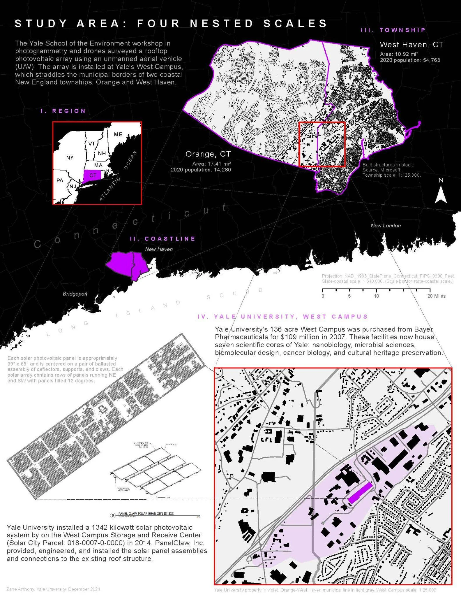
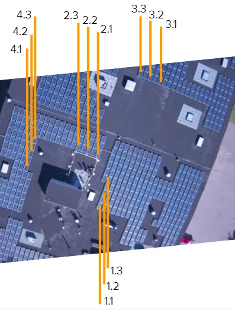
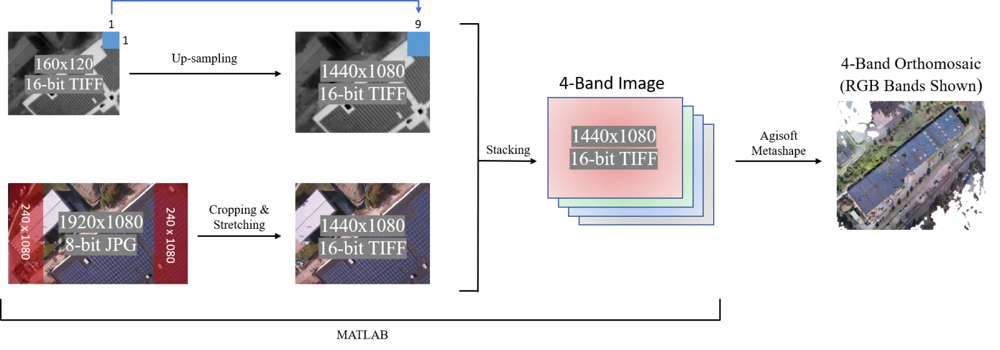
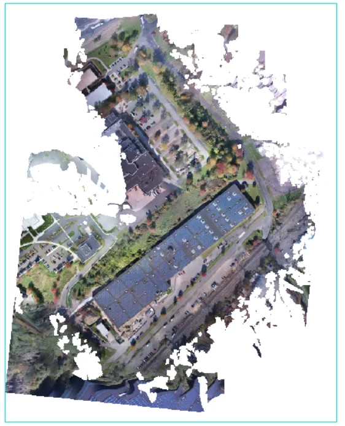
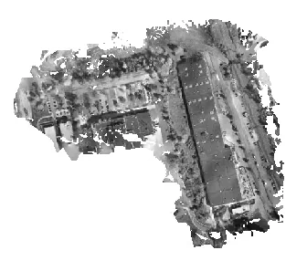
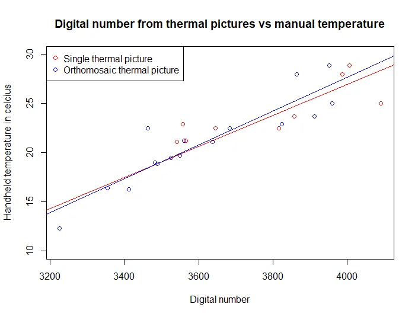
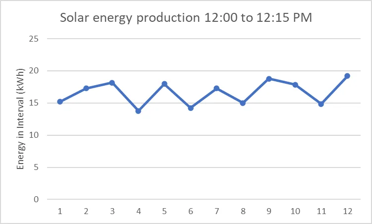
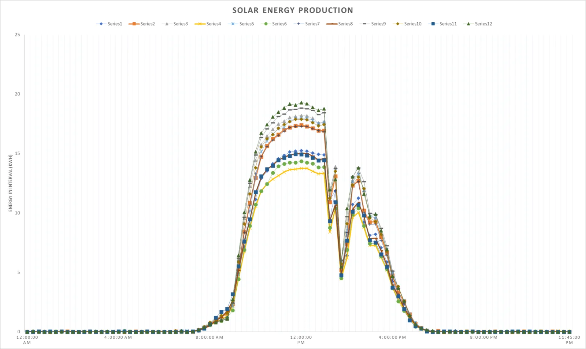

Yale ENV 704, course research. Flight of 3 November 2021.
Toward UAV decision-support tools for photovoltaic arrays: a coastal Connecticut thermal mosaicking case study
A solar panel that runs hot produces less power, and a panel that runs hotter than its neighbors is usually a panel with a problem. Finding those panels across an array by hand means walking it with a handheld thermometer. This study asks whether a drone can do it instead: fly a thermal camera and an ordinary camera over the array, stitch the images into two maps, calibrate the thermal map against panels measured on the ground, and read the temperature of every panel at once. The array is Yale's West Campus installation on the Connecticut coast, flown on a single November afternoon, with twelve panels measured by hand to calibrate the rest.
The site
Yale University’s West Campus straddles two coastal Connecticut townships, Orange and West Haven. In 2015, Yale purchased solar power from Solar City, which has since been acquired by Tesla in 2016, and installed 4,400 solar photovoltaic panels covering close to two acres of rooftop on a storage and receiving facility. The installation now generates 1.6 million kilowatt-hours of electricity annually, which is over 20% of West Campus’s total energy demand.

The flight and the measurements
The flight mission was performed on Wednesday, November 3rd, 2021 around 12:00 PM. The ambient air temperature was about 12°C and the relative humidity was 38%. DJI GS PRO was used to set up the flight path over the West Campus Storage and Receiving Center. The flight height was 60 meters above sea level–30 meter above the building. The entire flight took around 20 minutes. There were 3,463 total images—of which 1,733 were RGB photos and 1,730 were thermal photos. Additionally, temperature and GPS measurements were taken at 12 solar panels (Figure 6).

Workflow
The FTM theoretical workflow is depicted in Figure 7. The MATLAB algorithm in Yang & Lee (2019) up-samples the coarser thermal image so that the original pixel becomes a 9x9 matrix of smaller pixels, each with the same Digital Number (DN) values. The RGB image is then converted to a 16-bit TIFF image for consistency. Because the RGB and thermal images now have the same dimensions and bit depth, a 4-band band stack is created. The result is a TIFF image with the red, green, blue, and thermal band overlayed respectively.

The two mosaics
The processed four-band drone camera photos were then added to Agisoft Metashape Professional Version 1.7.4 build 13028 (64 bit) for processing. After the final screen of cameras, the structure for motion (SfM) algorithm was performed in standard sequence: Align Photos, Build Dense Cloud, and Build Orthomosaic (Figure 8 and 9). The DN value in the thermal photos is proportional to the infrared radiation captured by the thermal camera. By using Stefan-Boltzmann Law, this DN value was converted to temperature. The orthomosaic pixel size for the FLIR was calculated to 3.3 cm based off of the RGB component size.


Calibration
The DN values from the four band orthomosaic were calibrated with temperature measurements from an infrared thermometer performed simultaneously to the image capture. The linear regression model analyzed from single thermal images correlating to our calibration points which were directly from FLIR Camera images is Temperature (C) = 0.016(DN) - 36.2 with an R2 = 0.84 and p<0.01. Whereas the linear regression model composed from Agisoft in orthomosaic form correlating to the calibration points is Temperature (C) = 0.017(DN) - 41.0 with an R2 = 0.81 and p<0.01.

Energy output
Yale’s West Campus solar energy output was provided by the university. Although there are 20 solar panel groups, the energy production is represented by 12 electrical meters. The energy output of the 12 solar arrays was quite consistent during the time of our flight mission–it ranged from about 14 kWh to 19 kWh (Figure 11). At the beginning of our flight (12:00PM), the skies were clear. By the end of our flight (12:15PM), there were several clouds overhead. This correlates well with the drop in energy production seen around this time (Figure 12).

